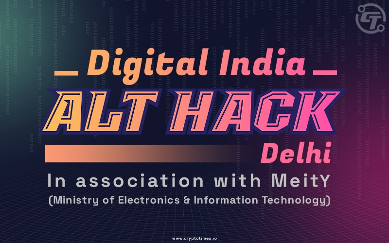

IBC Media Organizes Blockchian and Web3 Event at IIT Delhi

It was an exciting day for blockchain enthusiasts as IBC Media organized a Blockchain and Web3 event at IIT Delhi. The event provided a platform for industry experts, academicians, and students to exchange ideas, information, and best practices related to blockchain technology.
Why Blockchain Technology is Important
Blockchain technology is becoming increasingly important in today's digital world. Its ability to offer decentralization, transparency, and security is potentially revolutionary in a variety of industries such as finance, supply chain management, healthcare, and voting. For example, blockchain technology can help to authenticate voting, making it harder for people to cheat or cast fake votes.
The Importance of the IIT Delhi Event
The Blockchain and Web3 event at IIT Delhi was critical because it provided a platform for industry experts, startups, and students to exchange ideas, interact with peers and share knowledge. The following are some of the reasons why the event was so important:
- Networking opportunities: The event provided an opportunity for attendees to interact with visionary leaders, entrepreneurs and industry experts in the blockchain space. This helps to build relationships that could be beneficial in the future.
- Learning about new developments in blockchain: The event helped attendees keep up with emerging technologies and trends in the blockchain space, including the Web3 protocol, which is the next iteration of blockchain technology.
- Showcasing blockchain success stories: The event featured blockchain startups that successfully innovated using the technology. Learning from them first-hand was practical and invaluable experience.
The Future of Blockchain Technology
The future of blockchain technology is bright, and events such as the Blockchain and Web3 event at IIT Delhi help to reinforce this. For example, according to a report by Deloitte, blockchain technology will have a significant impact on various industries over the next five years.
Here are a few examples,
- Healthcare: Blockchain technology can help keep electronic medical records safe, secure, and private. This provides better patient care and can save lives.
- Cryptocurrency: The acceptance of cryptocurrencies is a significant trend that blockchain facilitates. The rise in decentralized finance (DeFi) is one such example as it enables traditional financial services to migrate to decentralized networks, which have the potential for more innovation, value and fewer intermediaries.
- Sustainable Supply Chain Management: Blockchain technology can help make supply chains more sustainable and secure while at the same improving efficiency, transparency, and reducing fraud or corruption. This, in turn, creates greater trust and sustainability of supply chains or resources.
Key Takeaways
Attending the Blockchain and Web3 event at IIT Delhi was an enriching experience that provided several insights into the blockchain domain that are worth highlighting. As the technology grows and evolves, it gets more attention, and it is now at the cusp of being widely adopted. Here are some of the critical points to takeaway:
- Blockchain technology creates a more transparent, decentralized, and secure system, which can transform industries and services.
- The blockchain ecosystem continues to grow and mature. It is vital to stay up to date with the latest developments, and attending events like the Blockchain and Web3 event at IIT Delhi is a great way to do so.
- The Blockchain as a technology is expected to revolutionize aspects of life and in turn create new innovation and opportunity. This innovation requires a regulated environment that balances controls and encouragement that allows the technology to operate freely.
References:
Blockchain and Supply Chain Management
How Blockchain is Disrupting Supply Chain Management
Hashtags
#Blockchain, #Web3, #IITDelhi, #IBCEvents, #Decentralization, #Transparency, #Security
SEO Keywords
Blockchain, Web3, industry experts, startups, students, decentralized finance (DeFi), supply chain management, transparency, security, blockchain ecosystem, cryptocurrency, sustainable, innovation.
Article Category
Blockchain Technology, Business, Education
Curated by Team Akash.Mittal.Blog
Curated by Team Akash.Mittal.Blog
Share on Twitter Share on LinkedIn